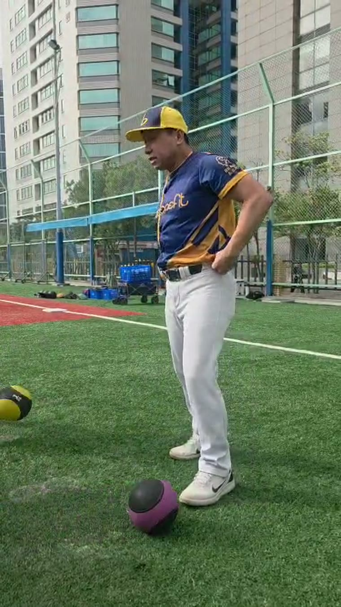

出手後的延續
Follow-through after release

藥球從高處往下甩、帶動身體旋轉出手，用來練體幹帶動手臂的順序。五秒短片，四格就是整個動作。
A medicine ball swung down and through with rotation, training the trunk to lead the arms. A five-second clip, four frames tell the whole story.
Follow-through after release

藥球從高處往下甩、帶動身體旋轉出手，用來練體幹帶動手臂的順序。五秒短片，四格就是整個動作。
A medicine ball swung down and through with rotation, training the trunk to lead the arms. A five-second clip, four frames tell the whole story.